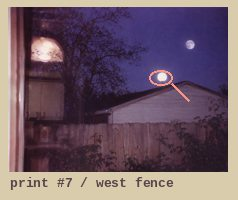

~ Circular No. 7 · revised Tuesday night, 14 October 1997 ~
Our neighbor has a moon.
Dear fellow observers,

Click photo to enlarge!
At 11:42 on Tuesday, the Hendersons’ garage acquired a satellite. I got one exposure through the kitchen window before Mr. Henderson took the bins out. At 11:43, the sky went back to its usual arrangement.
The treasurer says light switch. I say we ought to at least look at the negative. June has put the whole file on this page so you can make up your own mind.
Mabel Vellum
acting chief observer, West Fence
Documents relating to the Second Object
- The two photographic and pencil exhibits
Includes the original photograph, before I put the pencil mark on it. - A financial objection to the existence of Moon No. 2
Secretary’s minutes. The receipt for one 60-watt globe is discussed. - Enter your own finding in the observer’s notebook